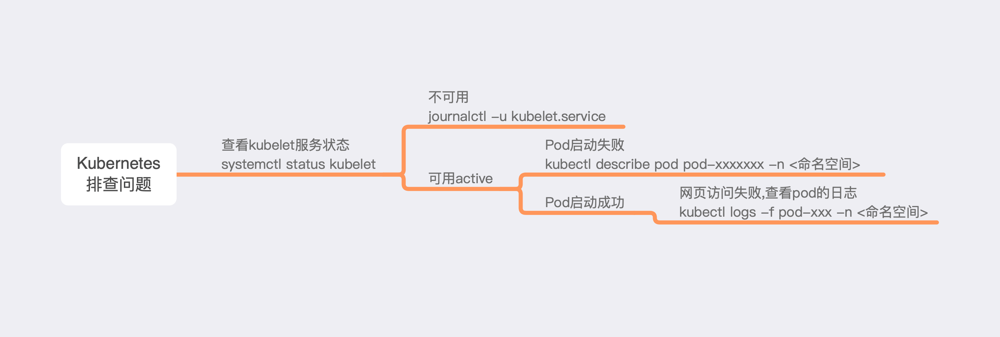

1. PD安装2个Centos7.6 1816虚拟机(例如主机名cc和主机名cc2), 或2台云主机, 或VM安装虚拟机(建议使用主机同一网络).请勿使用克隆, 克隆的虚拟与原虚拟机product_uuid一致.
安装或启动过程中容易碰到问题, 日志排查图放在前面.官方安装地址

2. 安装前检查
hostname必须不一致
hostname网络互通, 互ping
mac ip地址不一致
ifconfigproduct_uuid不一致
cat /sys/class/dmi/id/product_uuid禁用Swap交换分区, 保证kubelet正确运行, 必须永久禁用. 在安装设置中有对应的设置.
3. 安装前2台虚拟机都需要的设置
关闭防火墙, 不关闭集群间有些pod可能无法通信.
systemctl stop firewalld # 禁止开机启动 systemctl disable firewalld永久禁用交换分区swap.
# vi /etc/fstab 注释最后一行的swap # 重启 reboot装SELinux设置permissive模式
sed -i 's/^SELINUX=enforcing$/SELINUX=permissive/' /etc/selinux/config reboot安装源
# 国内 cat <<EOF > /etc/yum.repos.d/kubernetes.repo [kubernetes] name=Kubernetes baseurl=https://mirrors.aliyun.com/kubernetes/yum/repos/kubernetes-el7-x86_64 enabled=1 gpgcheck=0 EOF # 国外主机 cat <<EOF > /etc/yum.repos.d/kubernetes.repo [kubernetes] name=Kubernetes baseurl=https://packages.cloud.google.com/yum/repos/kubernetes-el7-x86_64 enabled=1 gpgcheck=1 repo_gpgcheck=1 gpgkey=https://packages.cloud.google.com/yum/doc/yum-key.gpg https://packages.cloud.google.com/yum/doc/rpm-package-key.gpg exclude=kube* EOF解决国内缺少镜像问题
docker pull mirrorgooglecontainers/kube-apiserver:v1.14.2 docker pull mirrorgooglecontainers/kube-controller-manager:v1.14.2 docker pull mirrorgooglecontainers/kube-scheduler:v1.14.2 docker pull mirrorgooglecontainers/kube-proxy:v1.14.2 docker pull mirrorgooglecontainers/pause:3.1 docker pull mirrorgooglecontainers/etcd:3.3.10 docker pull coredns/coredns:1.3.1 docker tag mirrorgooglecontainers/kube-controller-manager:v1.14.2 k8s.gcr.io/kube-controller-manager:v1.14.2 docker tag mirrorgooglecontainers/kube-scheduler:v1.14.2 k8s.gcr.io/kube-scheduler:v1.14.2 docker tag mirrorgooglecontainers/kube-apiserver:v1.14.2 k8s.gcr.io/kube-apiserver:v1.14.2 docker tag mirrorgooglecontainers/kube-proxy:v1.14.2 k8s.gcr.io/kube-proxy:v1.14.2 docker tag mirrorgooglecontainers/pause:3.1 k8s.gcr.io/pause:3.1 docker tag mirrorgooglecontainers/etcd:3.3.10 k8s.gcr.io/etcd:3.3.10 docker tag coredns/coredns:1.3.1 k8s.gcr.io/coredns:1.3.1解决网络错误
cat <<EOF > /etc/sysctl.d/k8s.conf net.bridge.bridge-nf-call-ip6tables = 1 net.bridge.bridge-nf-call-iptables = 1 EOF sysctl --system设置推荐的systemd driver
cat > /etc/docker/daemon.json <<EOF { "exec-opts": ["native.cgroupdriver=systemd"], "log-driver": "json-file", "log-opts": { "max-size": "100m" }, "storage-driver": "overlay2", "storage-opts": [ "overlay2.override_kernel_check=true" ] } EOF
4. 主master和从node需要开放的端口, 防火墙可以打开, 执行完毕后再关闭. 80,443个人补充的, 官方中并没有.
1. 在主节点上写入hosts内容
# 在一台机器上, 添加ip和主机名到/etc/hosts中
10.211.55.5 cc
10.211.55.6 cc2
2. Master节点需要开放的端口, 例如cc主机中
systemctl start firewalld
firewall-cmd --zone=public --add-port=6443/tcp --permanent
firewall-cmd --zone=public --add-port=2379-2380/tcp --permanent
firewall-cmd --zone=public --add-port=10250/tcp --permanent
firewall-cmd --zone=public --add-port=10251/tcp --permanent
firewall-cmd --zone=public --add-port=10252/tcp --permanent
firewall-cmd --zone=public --add-port=80/tcp --permanent
firewall-cmd --zone=public --add-port=443/tcp --permanent
firewall-cmd --reload
systemctl stop firewalld
3. Node节点需要开放的端口, 如cc2主机.
systemctl start firewalld
firewall-cmd --zone=public --add-port=10250/tcp --permanent
firewall-cmd --zone=public --add-port=30000-32767/tcp --permanent
firewall-cmd --zone=public --add-port=80/tcp --permanent
firewall-cmd --zone=public --add-port=443/tcp --permanent
firewall-cmd --reload
systemctl stop firewalld
5. 开始安装Kubernetes
yum install -y kubelet kubeadm kubectl --disableexcludes=kubernetes
# 设置开机启动
systemctl enable kubelet && systemctl start kubelet
6. 主机master上执行初始化.
kubeadm init --pod-network-cidr=10.244.0.0/16
对用户的设置, 如果想cc或cc2中任何用户可操作kubectl, 需要装.kube文件移动到对应的用户下.
mkdir -p $HOME/.kube
cp -i /etc/kubernetes/admin.conf $HOME/.kube/config
chown $(id -u):$(id -g) $HOME/.kube/config
7. 添加node, 在node节点执行, 初始化完会显示在列表中
kubeadm join 10.211.55.5:6443 --token ylml1p.xhp333geob6tvtkh \
--discovery-token-ca-cert-hash sha256:e5541130096be094
8. 查看是否初完成, 解决coredns pending问题
# 检查主机是否准备完成
kubectl get nodes
# 会显示not ready, 安装下面的网络插件即可解决
# 查看系统pod是否初始化完成
kubectl get pods -n kube-system
corednse显示pending中, 解决安装网络插件, 安装完毕等待几分钟即可.
wget https://raw.githubusercontent.com/coreos/flannel/v0.10.0/Documentation/kube-flannel.yml
kubectl apply -f kube-flannel.yml
kubectl apply -f "https://cloud.weave.works/k8s/net?k8s-version=$(kubectl version | base64 | tr -d '\n')"